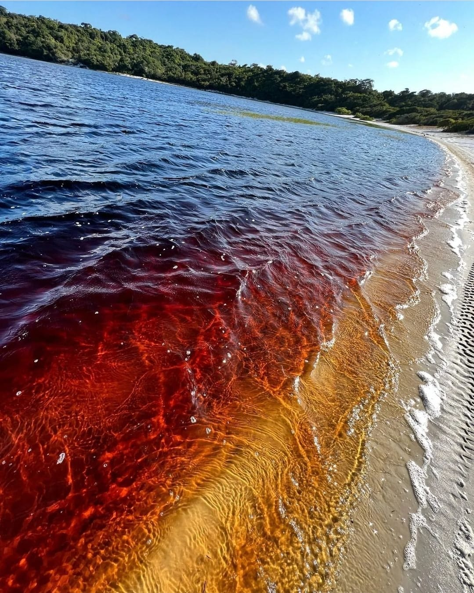
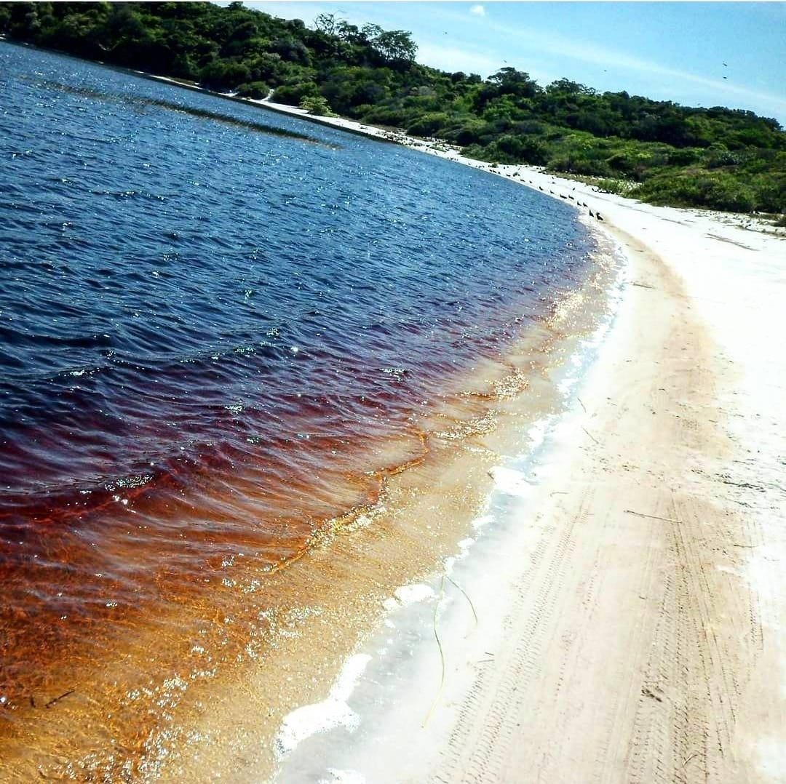
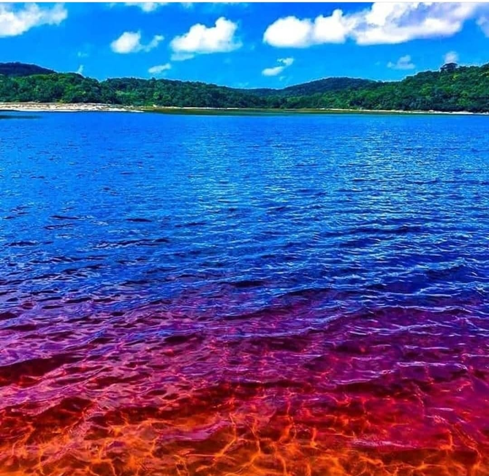
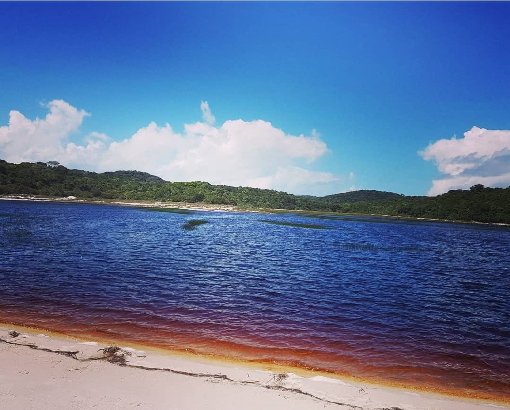

Lagoa da Coca Cola
Conheça a Lagoa da Coca Cola
Falando na Lagoa, ela também é conhecida como "Lagoa da Coca-Cola" devido à coloração avermelhada de suas águas - resultado da grande presença de matéria orgânica nesse meio.
Sua cor escura é devido à composicão química do solo, rico em iodo, ferro e carvão mineral, além da pigmentacão das raízes das árvores ao seu redor.
Originalmente conhecida como Lagoa da Araraquara, a atração é procurada pelos que acreditam que suas águas curam e rejuvenescem.

Lagoa da Coca Cola

Lagoa da Coca Cola1

Lagoa da Coca Cola2

Lagoa da Coca Cola3
Onde fica?
A Lagoa da Coca Cola fica localizada a aproximadamente 100km de Natal, situando-se no Município de Baía Formosa.

⬅ Página Principal